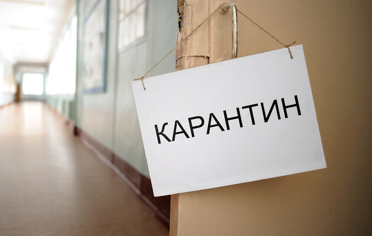
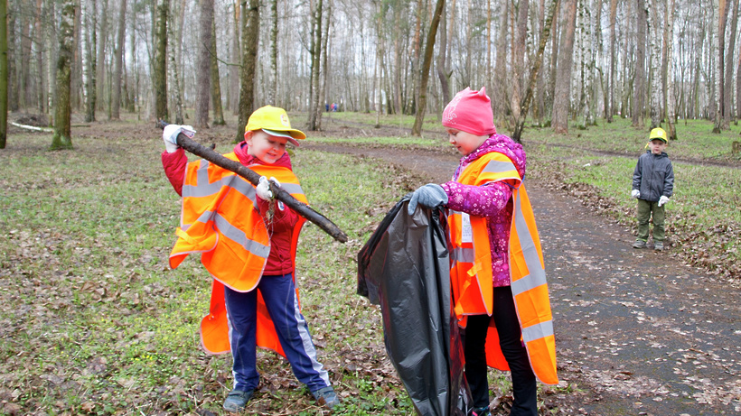

Увага абітурієнти!
Шановні вступники, ми починаємо прийому документів до нашого коледжу. Ви маєте можливість вступити до нашого закладу за вашими результатами ВНО. Будьте уважними при заповненні бланків та документів. Ми раді вам у будь який час!
20.05.21

Нове обладнання
В зв'язку з перемогою у тендері, нам предоставлена можливість поставити нове обладнання у наші кабінети. Просимо з повагою віднестись до нових пристоїв.
05.01.21

Карантин!
Шановні студенти, з сьогодняшньго дня у нашому закладі карантин. Просимо користуватись антисептичними засобами та вдягати маску. На вході в заклад ви будете повинні виміряти свою температуру та докласти її охоронцеві.
02.10.20
Зміни у розкладі!
Просимо усіх студентів та викладачів простережити за змінами у розкладі. Вони будуть відбуватись впродовж усього міяця.
10.05.20

Збір сміття
Шановні читачі, у зв'язку з погіршенням єкологічного середовищя у нашій країні, просимо усіх бажаючих прийти у суботу о 11:00 до холу коледжа. Відбудется зустріч з поїздки і прибирання сміття на території міста.
30.03.20